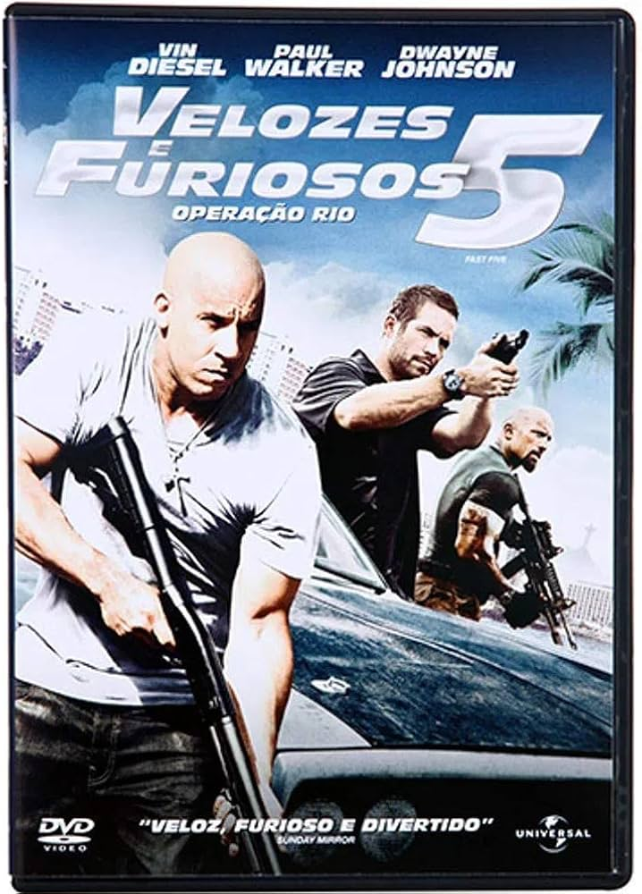
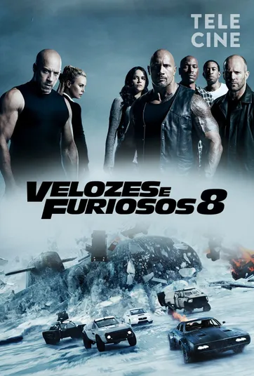
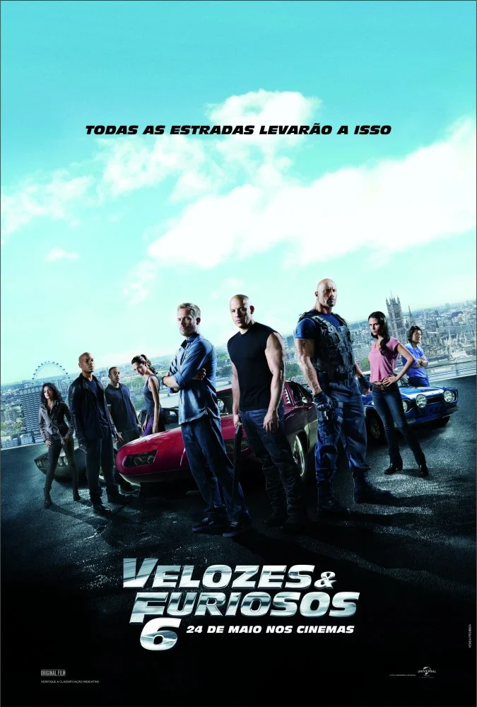
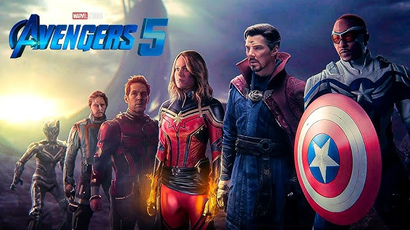
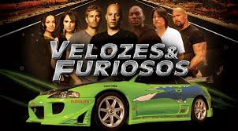
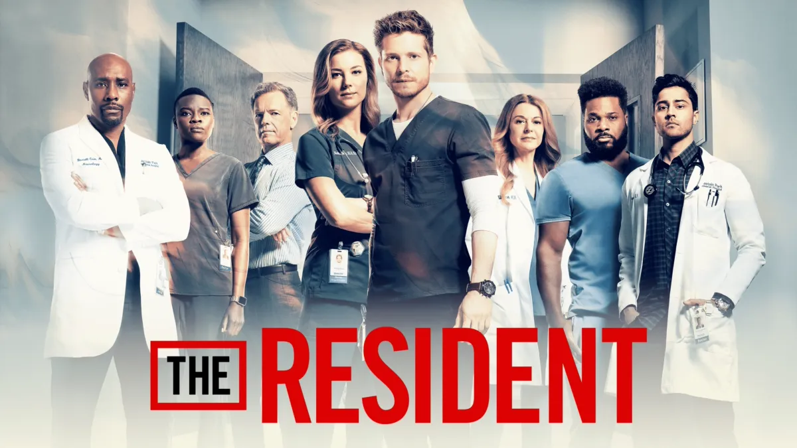

| filme |
imagem |
Sinopse |
Assista o Trailller |
velozes e furiosos 2 |
 |
x-policial Brian O'Conner se muda de Los Angeles para Miami para recomeçar sua vida. Ele acaba se envolvendo em rachas na sua nova cidade com seu amigo Tej e Suki. Suas aventuras terminam quando ele é preso e faz um acordo com agentes do FBI.x-policial Brian O'Conner se muda de Los Angeles para Miami para recomeçar sua vida. Ele acaba se envolvendo em rachas na sua nova cidade com seu amigo Tej e Suki. Suas aventuras terminam quando ele é preso e faz um acordo com agentes do FBI.
| velozes e furiosos 5 |
 |
Desde que o ex-policial Brian O'Conner e Mia Toretto libertaram Dom da prisão, eles viajam pelo mundo para fugir das autoridades. No Rio de Janeiro, eles são obrigados a fazer um último trabalho antes de ganhar sua liberdade definitiva.
|
| velozes e furiosos 7 |
 |
Um agente do governo oferece ajuda para cuidar de Shaw em troca de Dom e o grupo resgatar um hacker sequestrado. Dessa vez, não se trata apenas de velocidade:
|
| scooby doo |
.jpg) |
Scooby-Doo é o animal de estimação e o companheiro de longa vida de Salsicha Rogers. Ele pode falar e ficar sobre duas patas por muito tempo. É medroso, porém tem um coração de ouro e, assim como Salsicha, é comilão. O personagem utiliza muito o bordão "Scooby-dooby-doo"
|
| velozes e furiosos 8 |
 |
Depois da aposentadoria de Brian e Mia, Dom e Letty aproveitam a lua de mel e levam uma vida pacata e normal. Mas a adrenalina do passado volta com tudo quando uma mulher misteriosa obriga Dom a retornar ao mundo do crime e da velocidade.
|
| vingadores ultimato |
 |
Após Thanos eliminar metade das criaturas vivas, os Vingadores têm de lidar com a perda de amigos e entes queridos. Com Tony Stark vagando perdido no espaço sem água e comida, Steve Rogers e Natasha Romanov lideram a resistência contra o titã louc
|
| velozes e furiosos 9 |
 |
Dominic Toretto e Letty vivem uma vida pacata ao lado do filho. Mas eles logo são ameaçados pelo passado de Dom: seu irmão desaparecido Jakob, que retorna e está trabalhando ao lado de Cipher. Cabe a Dom reunir a equipe novamente para enfrentá-l
|
| velozes e furiosos 6 |
 |
Desde que o golpe de Dom e Brian no Rio de Janeiro deixou o grupo com 100 milhões de dólares, a equipe se espalhou pelo mundo
|
| as branquelas |
 |
Dois irmaos agentes do FBI, Marcus e Kevin Copeland, acidentalmente evitam que bandidos sejam presos em uma apreensao de drogas. Como castigo, eles são forçados a escoltar um par de socialites nos Hamptons. Quando as meninas descobrem o plano da agência, elas se recusam a ir.
|
| avengers 5 |
 |
A trama acontece no momento em que o multiverso passa a sofrer com Incursoes, quando duas Terras do multiverso colidem, causando a morte de seus habitantes e respectivos universos
|
| velozes e furiosos 4 |
.jpeg) |
Dominic Toretto descobre que sua amada Letty foi assassinada e resolve procurar pelo autor do crime. Enquanto isso, o agente Brian O'Conner está em busca de um traficante de drogas. Eles percebem que talvez estejam atrás da mesma pessoa.
|
| a saga dos vingadores |
.jpeg) |
O Barão Zemo está determinado a destruir os Vingadores de uma vez por todas! E, pior, os Mestres do Terror invadiram a Mansão dos Vingadores para encontrar apenas uma vítima: Jarvis! Com seu quartel-general sob certo, os Heróis Mais Poderosos da Terra vão precisar de toda a ajuda que puderem ter - inclusive a de amigões da vizinhança como o Homem-Aranha! E as coisas vão ficar mais complicadas ainda quando o Doutor Destino e o Duende Macabro se envolverem! Será que os Vingadores sobreviverão a esse conflito?
|
| prison break |
.jpeg) |
Michael Scofield é um homem desesperado em uma situação desesperada. Seu irmão, Lincoln Burrows, foi condenado por um crime que não cometeu e colocado no corredor da morte. Michael rende um banco para conseguir ser encarcerado junto ao irmão na penitenciária estadual de Fox River e coloca em ação u
|
| velozes e furiosos 1 |
 |
Brian O'Conner é um policial que se infiltra no submundo dos rachas de rua para investigar uma série de furtos. Enquanto tenta ganhar o respeito e a confiança do líder Dom Toretto, ele corre o risco de ser desmascarado
|
| the resident |
 |
Um médico arrogante abre os olhos de um residente idealista do primeiro ano para as realidades da vida hospitalar.
|
| velozes e furiosos tokyo |
 |
Sean Boswell é um piloto de rua que desafia seu rival e bate o carro no fim da corrida. Ele decide se mudar para o Japão para evitar a prisão nos Estados Unidos, já que os rachas não são nada populares com as autoridades. Em Tóquio, ele começa a aprender um excitante e perigoso estilo novo de compe
|